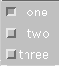

Packages This Package Prev Next Index
public class java.awt.Checkbox
extends java.awt.Component (II-§1.10)
{
// Constructors
public Checkbox(); §1.5.1
public Checkbox(String label); §1.5.2
public Checkbox(String label, CheckboxGroup group, §1.5.3
boolean state);
// Methods
public void addNotify(); §1.5.4
public CheckboxGroup getCheckboxGroup(); §1.5.5
public String getLabel(); §1.5.6
public boolean getState(); §1.5.7
protected String paramString(); §1.5.8
public void setCheckboxGroup(CheckboxGroup g); §1.5.9
public void setLabel(String label); §1.5.10
public void setState(boolean state); §1.5.11
}
A check box is a graphical component that has an "on" (true) and "off" (false) state. Clicking on the check box changes its state from "on" to "off" or from "off" to "on".
produces the following three check boxes:
setLayout(new GridLayout(3, 1)); add(new Checkbox("one", null, true)); add(new Checkbox("two")); add(new Checkbox("three"));
The button labelled one is "on". The other two are "off".
When the check box is clicked,1 AWT sends an action event (II-§1.14.11) to the check box. This event's target is the check box, and its object is a Boolean (I-§1.1) giving the new state of the check box. An application should override the action method (II-§1.10.1) of the check box or of one of its containing windows in order to cause some action to occur.
Optionally, several checkboxes can be grouped together into a CheckboxGroup (II-§1.6). At most one button in a group can be in the "on" state at any given time. Pushing a check box to turn it "on" forces any other check box in the group that is "on" to become "off".
public Checkbox()
public Checkbox(String label)
label
- a string label for the check box, or null for no label.
public Checkbox(String label, CheckboxGroup group,
boolean state)
label
- a string label for the check box, or null for no label
group
- this check box's check box group, or null for no group
state
- the initial state of the check box: true indicates "on"; false
indicates "off"
public void addNotify()
public CheckboxGroup getCheckboxGroup()
public String getLabel()
public boolean getState()
protected String paramString()
public void setCheckboxGroup(CheckboxGroup g)
g
- the new check box group, or null to remove the check box from any
check box group
public void setLabel(String label)
label
- the new label, or null for no label
public void setState(boolean state)
state
- the boolean state of the check box.
Packages This Package Prev Next IndexJava API Document (HTML generated by dkramer on April 22, 1996)